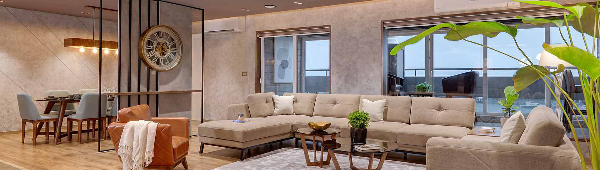

WHAT WE DO
KITCHEN
Custom-made Modular Kitchen
We offer modular kitchen designs for flat (apartment), or villas anywhere in India as per client’s requirements. Customized modular kitchen designs suits the client's lifestyle and fits perfectly in the space. An experienced interior designer from PRIME visits the site, takes measurements and understands requirements through several discussions. Our designer incorporates client’s requirements into suitable design as per shape and size of the kitchen. Once the client is completely satisfied with the drawings and specifications, the company produces a modular kitchen from its own factory. A team of experienced technicians perform installation on site with perfect coordination. This professional interior design company can execute a work within 35-40 days of finalization of drawings. Below are the 5 most popular types of modular kitchen designs by PRIME interiors
OUR KITCHEN STYLES
ISLAND KITCHEN